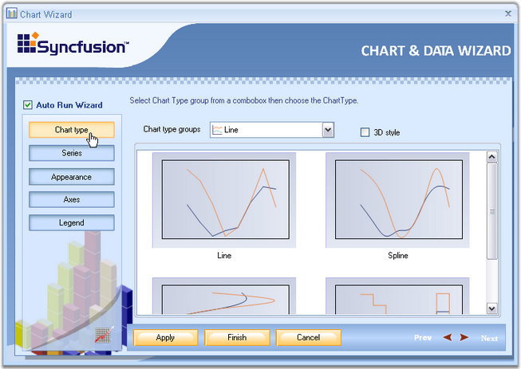
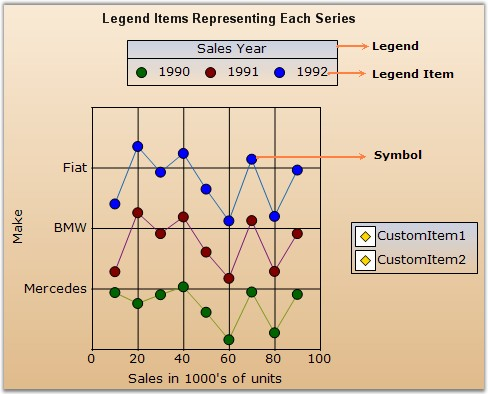
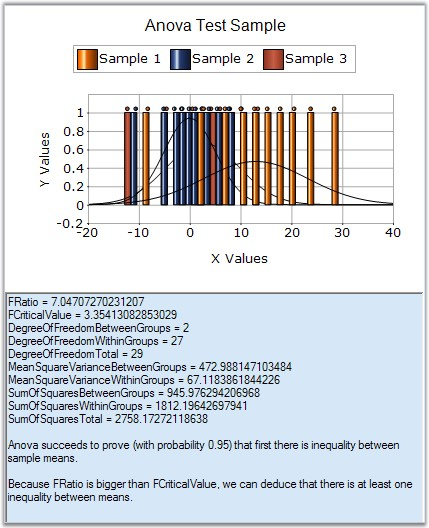
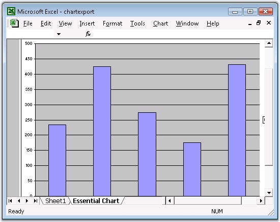
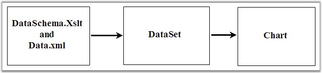
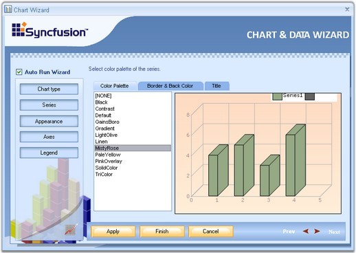
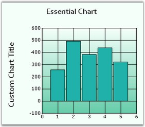
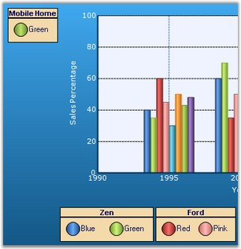
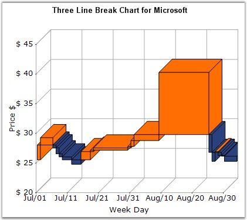
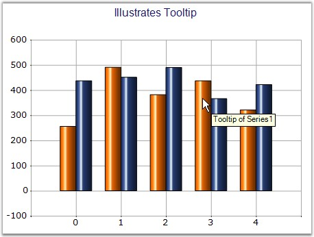

The features of Essential Chart are listed below:
· Chart and Data Wizard - The control provides complete support for customization of the Chart control through Chart Wizard at design time and also at run time. Chart Wizard comes with new Office look and feel.

Figure 12: Chart and Data Wizard
· Chart Data Model - This innovative data object model makes it easy to populate the chart with any kind of data source.
· Date Handling - Essential Chart features built in support for dates. The data type of any series that is plotted on the chart can be set to DateTime.
· Automatic Range - Essential Chart offers automatic interval calculation capabilities for any range of numbers or dates. This calculation can be overridden by explicit allocation of ranges and intervals to be used and also with settings that control how 'nice' numbers are calculated for display.
· Legends - Essential Chart offers extensive customization possibilities of the legend. The position of the legend on the chart area as well as its representation aspects can all be completely customized. Essential Chart also features modification of legend items using events. It also supports custom legend items that are not tied to series of data.

Figure 13: Chart with Legend and Legend Items
· Support for 2D or 3D appearance of the Chart.

2D Funnel Chart
· Chart can be easily bound with IEnumerable based collections like ArrayList. This extends chart to be easily used with LINQ.
· The control provides complete design time support using Visual studio.
· Statistical formula support for Mean, Standard Deviation, Variance, Distributions, t-test, f-test, Z-test, and so on.

Figure 14: Anova Test
· Exporting Chart to PDF, to Excel and to Doc and so on are available for the chart control. Importing is also supported.

Figure 15: Essential Chart translated into a Excel Chart by using Essential XlsIO

Figure 16: Importing data from XML to Chart
· Support To create custom palettes - Users can create custom palettes for their Charts by using CustomPalette property. Also, create non-gradient palettes for the Charts by using this custom palettes feature.

Figure 17: Chart Wizard with Palette Settings
· Multiple Chart Titles and Multiple Legends can be provided with abilities to format the Title text.

Figure 18: Multiple Chart Titles

Figure 19: Multiple Chart Legends
· Smart Tag feature with sophisticated options.
· Chart Breaks are introduced in this version. Breaks are very useful when you use series points with large difference.

Figure 20: Chart displaying Three Line Break Series
· ChartWebControl can now display tooltips for specific areas like in Chart Windows.

Figure 21: ToolTip set for Chart Series